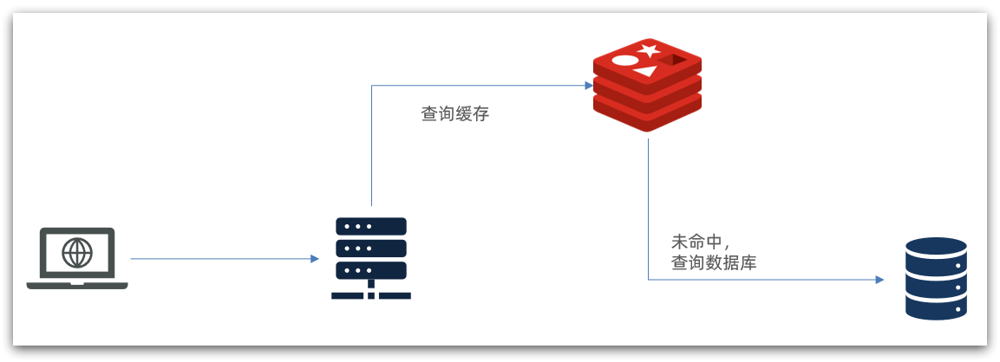
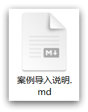
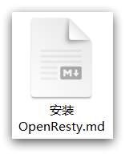
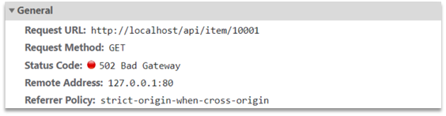
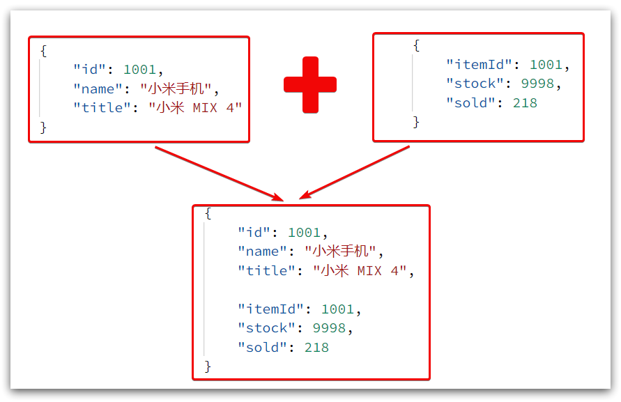
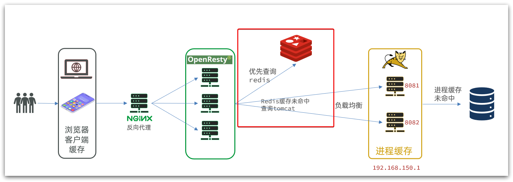

1.什么是多级缓存
传统的缓存策略一般是请求到达Tomcat后，先查询Redis，如果未命中则查询数据库，如图：

存在下面的问题：
•请求要经过Tomcat处理，Tomcat的性能成为整个系统的瓶颈
•Redis缓存失效时，会对数据库产生冲击
多级缓存就是充分利用请求处理的每个环节，分别添加缓存，减轻Tomcat压力，提升服务性能：
- 浏览器访问静态资源时，优先读取浏览器本地缓存
- 访问非静态资源（ajax查询数据）时，访问服务端
- 请求到达Nginx后，优先读取Nginx本地缓存
- 如果Nginx本地缓存未命中，则去直接查询Redis（不经过Tomcat）
- 如果Redis查询未命中，则查询Tomcat
- 请求进入Tomcat后，优先查询JVM进程缓存
- 如果JVM进程缓存未命中，则查询数据库

在多级缓存架构中，Nginx内部需要编写本地缓存查询、Redis查询、Tomcat查询的业务逻辑，因此这样的nginx服务不再是一个反向代理服务器，而是一个编写业务的Web服务器了。
因此这样的业务Nginx服务也需要搭建集群来提高并发，再有专门的nginx服务来做反向代理，如图：

另外，我们的Tomcat服务将来也会部署为集群模式：

可见，多级缓存的关键有两个：
-
一个是在nginx中编写业务，实现nginx本地缓存、Redis、Tomcat的查询
-
另一个就是在Tomcat中实现JVM进程缓存
其中Nginx编程则会用到OpenResty框架结合Lua这样的语言。
这也是今天课程的难点和重点。
2.JVM进程缓存
为了演示多级缓存的案例，我们先准备一个商品查询的业务。
2.1.导入案例
参考课前资料的：《案例导入说明.md》

2.2.初识Caffeine
缓存在日常开发中启动至关重要的作用，由于是存储在内存中，数据的读取速度是非常快的，能大量减少对数据库的访问，减少数据库的压力。我们把缓存分为两类：
- 分布式缓存，例如Redis：
- 优点：存储容量更大、可靠性更好、可以在集群间共享
- 缺点：访问缓存有网络开销
- 场景：缓存数据量较大、可靠性要求较高、需要在集群间共享
- 进程本地缓存，例如HashMap、GuavaCache：
- 优点：读取本地内存，没有网络开销，速度更快
- 缺点：存储容量有限、可靠性较低、无法共享
- 场景：性能要求较高，缓存数据量较小
我们今天会利用Caffeine框架来实现JVM进程缓存。
Caffeine是一个基于Java8开发的，提供了近乎最佳命中率的高性能的本地缓存库。目前Spring内部的缓存使用的就是Caffeine。GitHub地址：https://github.com/ben-manes/caffeine
Caffeine的性能非常好，下图是官方给出的性能对比：

可以看到Caffeine的性能遥遥领先！
缓存使用的基本API：
@Test
void testBasicOps() {
// 构建cache对象
Cache<String, String> cache = Caffeine.newBuilder().build();
// 存数据
cache.put("gf", "迪丽热巴");
// 取数据
String gf = cache.getIfPresent("gf");
System.out.println("gf = " + gf);
// 取数据，包含两个参数：
// 参数一：缓存的key
// 参数二：Lambda表达式，表达式参数就是缓存的key，方法体是查询数据库的逻辑
// 优先根据key查询JVM缓存，如果未命中，则执行参数二的Lambda表达式
String defaultGF = cache.get("defaultGF", key -> {
// 根据key去数据库查询数据
return "柳岩";
});
System.out.println("defaultGF = " + defaultGF);
}
Caffeine既然是缓存的一种，肯定需要有缓存的清除策略，不然的话内存总会有耗尽的时候。
Caffeine提供了三种缓存驱逐策略：
-
基于容量：设置缓存的数量上限
// 创建缓存对象 Cache<String, String> cache = Caffeine.newBuilder() .maximumSize(1) // 设置缓存大小上限为 1 .build(); -
基于时间：设置缓存的有效时间
// 创建缓存对象 Cache<String, String> cache = Caffeine.newBuilder() // 设置缓存有效期为 10 秒，从最后一次写入开始计时 .expireAfterWrite(Duration.ofSeconds(10)) .build(); -
基于引用：设置缓存为软引用或弱引用，利用GC来回收缓存数据。性能较差，不建议使用。
注意：在默认情况下，当一个缓存元素过期的时候，Caffeine不会自动立即将其清理和驱逐。而是在一次读或写操作后，或者在空闲时间完成对失效数据的驱逐。
2.3.实现JVM进程缓存
2.3.1.需求
利用Caffeine实现下列需求：
- 给根据id查询商品的业务添加缓存，缓存未命中时查询数据库
- 给根据id查询商品库存的业务添加缓存，缓存未命中时查询数据库
- 缓存初始大小为100
- 缓存上限为10000
2.3.2.实现
首先，我们需要定义两个Caffeine的缓存对象，分别保存商品、库存的缓存数据。
在item-service的com.heima.item.config包下定义CaffeineConfig类：
package com.heima.item.config;
import com.github.benmanes.caffeine.cache.Cache;
import com.github.benmanes.caffeine.cache.Caffeine;
import com.heima.item.pojo.Item;
import com.heima.item.pojo.ItemStock;
import org.springframework.context.annotation.Bean;
import org.springframework.context.annotation.Configuration;
@Configuration
public class CaffeineConfig {
@Bean
public Cache<Long, Item> itemCache(){
return Caffeine.newBuilder()
.initialCapacity(100)
.maximumSize(10_000)
.build();
}
@Bean
public Cache<Long, ItemStock> stockCache(){
return Caffeine.newBuilder()
.initialCapacity(100)
.maximumSize(10_000)
.build();
}
}
然后，修改item-service中的com.heima.item.web包下的ItemController类，添加缓存逻辑：
@RestController
@RequestMapping("item")
public class ItemController {
@Autowired
private IItemService itemService;
@Autowired
private IItemStockService stockService;
@Autowired
private Cache<Long, Item> itemCache;
@Autowired
private Cache<Long, ItemStock> stockCache;
// ...其它略
@GetMapping("/{id}")
public Item findById(@PathVariable("id") Long id) {
return itemCache.get(id, key -> itemService.query()
.ne("status", 3).eq("id", key)
.one()
);
}
@GetMapping("/stock/{id}")
public ItemStock findStockById(@PathVariable("id") Long id) {
return stockCache.get(id, key -> stockService.getById(key));
}
}
3.Lua语法入门
Nginx编程需要用到Lua语言，因此我们必须先入门Lua的基本语法。
3.1.初识Lua
Lua 是一种轻量小巧的脚本语言，用标准C语言编写并以源代码形式开放， 其设计目的是为了嵌入应用程序中，从而为应用程序提供灵活的扩展和定制功能。官网：https://www.lua.org/

Lua经常嵌入到C语言开发的程序中，例如游戏开发、游戏插件等。
Nginx本身也是C语言开发，因此也允许基于Lua做拓展。
3.1.HelloWorld
CentOS7默认已经安装了Lua语言环境，所以可以直接运行Lua代码。
1）在Linux虚拟机的任意目录下，新建一个hello.lua文件

2）添加下面的内容
print("Hello World!")
3）运行

3.2.变量和循环
学习任何语言必然离不开变量，而变量的声明必须先知道数据的类型。
3.2.1.Lua的数据类型
Lua中支持的常见数据类型包括：

另外，Lua提供了type()函数来判断一个变量的数据类型：

3.2.2.声明变量
Lua声明变量的时候无需指定数据类型，而是用local来声明变量为局部变量：
-- 声明字符串，可以用单引号或双引号，
local str = 'hello'
-- 字符串拼接可以使用 ..
local str2 = 'hello' .. 'world'
-- 声明数字
local num = 21
-- 声明布尔类型
local flag = true
Lua中的table类型既可以作为数组，又可以作为Java中的map来使用。数组就是特殊的table，key是数组角标而已：
-- 声明数组 ，key为角标的 table
local arr = {'java', 'python', 'lua'}
-- 声明table，类似java的map
local map = {name='Jack', age=21}
Lua中的数组角标是从1开始，访问的时候与Java中类似：
-- 访问数组，lua数组的角标从1开始
print(arr[1])
Lua中的table可以用key来访问：
-- 访问table
print(map['name'])
print(map.name)
3.2.3.循环
对于table，我们可以利用for循环来遍历。不过数组和普通table遍历略有差异。
遍历数组：
-- 声明数组 key为索引的 table
local arr = {'java', 'python', 'lua'}
-- 遍历数组
for index,value in ipairs(arr) do
print(index, value)
end
遍历普通table
-- 声明map，也就是table
local map = {name='Jack', age=21}
-- 遍历table
for key,value in pairs(map) do
print(key, value)
end
3.3.条件控制、函数
Lua中的条件控制和函数声明与Java类似。
3.3.1.函数
定义函数的语法：
function 函数名( argument1, argument2..., argumentn)
-- 函数体
return 返回值
end
例如，定义一个函数，用来打印数组：
function printArr(arr)
for index, value in ipairs(arr) do
print(value)
end
end
3.3.2.条件控制
类似Java的条件控制，例如if、else语法：
if(布尔表达式)
then
--[ 布尔表达式为 true 时执行该语句块 --]
else
--[ 布尔表达式为 false 时执行该语句块 --]
end
与java不同，布尔表达式中的逻辑运算是基于英文单词：

3.3.3.案例
需求：自定义一个函数，可以打印table，当参数为nil时，打印错误信息
function printArr(arr)
if not arr then
print('数组不能为空！')
end
for index, value in ipairs(arr) do
print(value)
end
end
4.实现多级缓存
多级缓存的实现离不开Nginx编程，而Nginx编程又离不开OpenResty。
4.1.安装OpenResty
OpenResty® 是一个基于 Nginx的高性能 Web 平台，用于方便地搭建能够处理超高并发、扩展性极高的动态 Web 应用、Web 服务和动态网关。具备下列特点：
- 具备Nginx的完整功能
- 基于Lua语言进行扩展，集成了大量精良的 Lua 库、第三方模块
- 允许使用Lua自定义业务逻辑、自定义库
官方网站： https://openresty.org/cn/

安装Lua可以参考课前资料提供的《安装OpenResty.md》：

4.2.OpenResty快速入门
我们希望达到的多级缓存架构如图：

其中：
-
windows上的nginx用来做反向代理服务，将前端的查询商品的ajax请求代理到OpenResty集群
-
OpenResty集群用来编写多级缓存业务
4.2.1.反向代理流程
现在，商品详情页使用的是假的商品数据。不过在浏览器中，可以看到页面有发起ajax请求查询真实商品数据。
这个请求如下：

请求地址是localhost，端口是80，就被windows上安装的Nginx服务给接收到了。然后代理给了OpenResty集群：

我们需要在OpenResty中编写业务，查询商品数据并返回到浏览器。
但是这次，我们先在OpenResty接收请求，返回假的商品数据。
4.2.2.OpenResty监听请求
OpenResty的很多功能都依赖于其目录下的Lua库，需要在nginx.conf中指定依赖库的目录，并导入依赖：
1）添加对OpenResty的Lua模块的加载
修改/usr/local/openresty/nginx/conf/nginx.conf文件，在其中的http下面，添加下面代码：
#lua 模块
lua_package_path "/usr/local/openresty/lualib/?.lua;;";
#c模块
lua_package_cpath "/usr/local/openresty/lualib/?.so;;";
2）监听/api/item路径
修改/usr/local/openresty/nginx/conf/nginx.conf文件，在nginx.conf的server下面，添加对/api/item这个路径的监听：
location /api/item {
# 默认的响应类型
default_type application/json;
# 响应结果由lua/item.lua文件来决定
content_by_lua_file lua/item.lua;
}
这个监听，就类似于SpringMVC中的@GetMapping("/api/item")做路径映射。
而content_by_lua_file lua/item.lua则相当于调用item.lua这个文件，执行其中的业务，把结果返回给用户。相当于java中调用service。
4.2.3.编写item.lua
1）在/usr/loca/openresty/nginx目录创建文件夹：lua

2）在/usr/loca/openresty/nginx/lua文件夹下，新建文件：item.lua

3）编写item.lua，返回假数据
item.lua中，利用ngx.say()函数返回数据到Response中
ngx.say('{"id":10001,"name":"SALSA AIR","title":"RIMOWA 21寸托运箱拉杆箱 SALSA AIR系列果绿色 820.70.36.4","price":17900,"image":"https://m.360buyimg.com/mobilecms/s720x720_jfs/t6934/364/1195375010/84676/e9f2c55f/597ece38N0ddcbc77.jpg!q70.jpg.webp","category":"拉杆箱","brand":"RIMOWA","spec":"","status":1,"createTime":"2019-04-30T16:00:00.000+00:00","updateTime":"2019-04-30T16:00:00.000+00:00","stock":2999,"sold":31290}')
4）重新加载配置
nginx -s reload
刷新商品页面：http://localhost/item.html?id=1001，即可看到效果：

4.3.请求参数处理
上一节中，我们在OpenResty接收前端请求，但是返回的是假数据。
要返回真实数据，必须根据前端传递来的商品id，查询商品信息才可以。
那么如何获取前端传递的商品参数呢？
4.3.1.获取参数的API
OpenResty中提供了一些API用来获取不同类型的前端请求参数：

4.3.2.获取参数并返回
在前端发起的ajax请求如图：

可以看到商品id是以路径占位符方式传递的，因此可以利用正则表达式匹配的方式来获取ID
1）获取商品id
修改/usr/loca/openresty/nginx/nginx.conf文件中监听/api/item的代码，利用正则表达式获取ID：
location ~ /api/item/(\d+) {
# 默认的响应类型
default_type application/json;
# 响应结果由lua/item.lua文件来决定
content_by_lua_file lua/item.lua;
}
2）拼接ID并返回
修改/usr/loca/openresty/nginx/lua/item.lua文件，获取id并拼接到结果中返回：
-- 获取商品id
local id = ngx.var[1]
-- 拼接并返回
ngx.say('{"id":' .. id .. ',"name":"SALSA AIR","title":"RIMOWA 21寸托运箱拉杆箱 SALSA AIR系列果绿色 820.70.36.4","price":17900,"image":"https://m.360buyimg.com/mobilecms/s720x720_jfs/t6934/364/1195375010/84676/e9f2c55f/597ece38N0ddcbc77.jpg!q70.jpg.webp","category":"拉杆箱","brand":"RIMOWA","spec":"","status":1,"createTime":"2019-04-30T16:00:00.000+00:00","updateTime":"2019-04-30T16:00:00.000+00:00","stock":2999,"sold":31290}')
3）重新加载并测试
运行命令以重新加载OpenResty配置：
nginx -s reload
刷新页面可以看到结果中已经带上了ID：

4.4.查询Tomcat
拿到商品ID后，本应去缓存中查询商品信息，不过目前我们还未建立nginx、redis缓存。因此，这里我们先根据商品id去tomcat查询商品信息。我们实现如图部分：

需要注意的是，我们的OpenResty是在虚拟机，Tomcat是在Windows电脑上。两者IP一定不要搞错了。

4.4.1.发送http请求的API
nginx提供了内部API用以发送http请求：
local resp = ngx.location.capture("/path",{
method = ngx.HTTP_GET, -- 请求方式
args = {a=1,b=2}, -- get方式传参数
})
返回的响应内容包括：
- resp.status：响应状态码
- resp.header：响应头，是一个table
- resp.body：响应体，就是响应数据
注意：这里的path是路径，并不包含IP和端口。这个请求会被nginx内部的server监听并处理。
但是我们希望这个请求发送到Tomcat服务器，所以还需要编写一个server来对这个路径做反向代理：
location /path {
# 这里是windows电脑的ip和Java服务端口，需要确保windows防火墙处于关闭状态
proxy_pass http://192.168.150.1:8081;
}
原理如图：

4.4.2.封装http工具
下面，我们封装一个发送Http请求的工具，基于ngx.location.capture来实现查询tomcat。
1）添加反向代理，到windows的Java服务
因为item-service中的接口都是/item开头，所以我们监听/item路径，代理到windows上的tomcat服务。
修改 /usr/local/openresty/nginx/conf/nginx.conf文件，添加一个location：
location /item {
proxy_pass http://192.168.150.1:8081;
}
以后，只要我们调用ngx.location.capture("/item")，就一定能发送请求到windows的tomcat服务。
2）封装工具类
之前我们说过，OpenResty启动时会加载以下两个目录中的工具文件：

所以，自定义的http工具也需要放到这个目录下。
在/usr/local/openresty/lualib目录下，新建一个common.lua文件：
vi /usr/local/openresty/lualib/common.lua
内容如下:
-- 封装函数，发送http请求，并解析响应
local function read_http(path, params)
local resp = ngx.location.capture(path,{
method = ngx.HTTP_GET,
args = params,
})
if not resp then
-- 记录错误信息，返回404
ngx.log(ngx.ERR, "http请求查询失败, path: ", path , ", args: ", args)
ngx.exit(404)
end
return resp.body
end
-- 将方法导出
local _M = {
read_http = read_http
}
return _M
这个工具将read_http函数封装到_M这个table类型的变量中，并且返回，这类似于导出。
使用的时候，可以利用require('common')来导入该函数库，这里的common是函数库的文件名。
3）实现商品查询
最后，我们修改/usr/local/openresty/lua/item.lua文件，利用刚刚封装的函数库实现对tomcat的查询：
-- 引入自定义common工具模块，返回值是common中返回的 _M
local common = require("common")
-- 从 common中获取read_http这个函数
local read_http = common.read_http
-- 获取路径参数
local id = ngx.var[1]
-- 根据id查询商品
local itemJSON = read_http("/item/".. id, nil)
-- 根据id查询商品库存
local itemStockJSON = read_http("/item/stock/".. id, nil)
这里查询到的结果是json字符串，并且包含商品、库存两个json字符串，页面最终需要的是把两个json拼接为一个json：

这就需要我们先把JSON变为lua的table，完成数据整合后，再转为JSON。
4.4.3.CJSON工具类
OpenResty提供了一个cjson的模块用来处理JSON的序列化和反序列化。
官方地址： https://github.com/openresty/lua-cjson/
1）引入cjson模块：
local cjson = require "cjson"
2）序列化：
local obj = {
name = 'jack',
age = 21
}
-- 把 table 序列化为 json
local json = cjson.encode(obj)
3）反序列化：
local json = '{"name": "jack", "age": 21}'
-- 反序列化 json为 table
local obj = cjson.decode(json);
print(obj.name)
4.4.4.实现Tomcat查询
下面，我们修改之前的item.lua中的业务，添加json处理功能：
-- 导入common函数库
local common = require('common')
local read_http = common.read_http
-- 导入cjson库
local cjson = require('cjson')
-- 获取路径参数
local id = ngx.var[1]
-- 根据id查询商品
local itemJSON = read_http("/item/".. id, nil)
-- 根据id查询商品库存
local itemStockJSON = read_http("/item/stock/".. id, nil)
-- JSON转化为lua的table
local item = cjson.decode(itemJSON)
local stock = cjson.decode(stockJSON)
-- 组合数据
item.stock = stock.stock
item.sold = stock.sold
-- 把item序列化为json 返回结果
ngx.say(cjson.encode(item))
4.4.5.基于ID负载均衡
刚才的代码中，我们的tomcat是单机部署。而实际开发中，tomcat一定是集群模式：

因此，OpenResty需要对tomcat集群做负载均衡。
而默认的负载均衡规则是轮询模式，当我们查询/item/10001时：
- 第一次会访问8081端口的tomcat服务，在该服务内部就形成了JVM进程缓存
- 第二次会访问8082端口的tomcat服务，该服务内部没有JVM缓存（因为JVM缓存无法共享），会查询数据库
- …
你看，因为轮询的原因，第一次查询8081形成的JVM缓存并未生效，直到下一次再次访问到8081时才可以生效，缓存命中率太低了。
怎么办？
如果能让同一个商品，每次查询时都访问同一个tomcat服务，那么JVM缓存就一定能生效了。
也就是说，我们需要根据商品id做负载均衡，而不是轮询。
1）原理
nginx提供了基于请求路径做负载均衡的算法：
nginx根据请求路径做hash运算，把得到的数值对tomcat服务的数量取余，余数是几，就访问第几个服务，实现负载均衡。
例如：
- 我们的请求路径是 /item/10001
- tomcat总数为2台（8081、8082）
- 对请求路径/item/1001做hash运算求余的结果为1
- 则访问第一个tomcat服务，也就是8081
只要id不变，每次hash运算结果也不会变，那就可以保证同一个商品，一直访问同一个tomcat服务，确保JVM缓存生效。
2）实现
修改/usr/local/openresty/nginx/conf/nginx.conf文件，实现基于ID做负载均衡。
首先，定义tomcat集群，并设置基于路径做负载均衡：
upstream tomcat-cluster {
hash $request_uri;
server 192.168.150.1:8081;
server 192.168.150.1:8082;
}
然后，修改对tomcat服务的反向代理，目标指向tomcat集群：
location /item {
proxy_pass http://tomcat-cluster;
}
重新加载OpenResty
nginx -s reload
3）测试
启动两台tomcat服务：

同时启动：

清空日志后，再次访问页面，可以看到不同id的商品，访问到了不同的tomcat服务：


4.5.Redis缓存预热
Redis缓存会面临冷启动问题：
冷启动：服务刚刚启动时，Redis中并没有缓存，如果所有商品数据都在第一次查询时添加缓存，可能会给数据库带来较大压力。
缓存预热：在实际开发中，我们可以利用大数据统计用户访问的热点数据，在项目启动时将这些热点数据提前查询并保存到Redis中。
我们数据量较少，并且没有数据统计相关功能，目前可以在启动时将所有数据都放入缓存中。
1）利用Docker安装Redis
docker run --name redis -p 6379:6379 -d redis redis-server --appendonly yes
2）在item-service服务中引入Redis依赖
<dependency>
<groupId>org.springframework.boot</groupId>
<artifactId>spring-boot-starter-data-redis</artifactId>
</dependency>
3）配置Redis地址
spring:
redis:
host: 192.168.150.101
4）编写初始化类
缓存预热需要在项目启动时完成，并且必须是拿到RedisTemplate之后。
这里我们利用InitializingBean接口来实现，因为InitializingBean可以在对象被Spring创建并且成员变量全部注入后执行。
package com.heima.item.config;
import com.fasterxml.jackson.core.JsonProcessingException;
import com.fasterxml.jackson.databind.ObjectMapper;
import com.heima.item.pojo.Item;
import com.heima.item.pojo.ItemStock;
import com.heima.item.service.IItemService;
import com.heima.item.service.IItemStockService;
import org.springframework.beans.factory.InitializingBean;
import org.springframework.beans.factory.annotation.Autowired;
import org.springframework.data.redis.core.StringRedisTemplate;
import org.springframework.stereotype.Component;
import java.util.List;
@Component
public class RedisHandler implements InitializingBean {
@Autowired
private StringRedisTemplate redisTemplate;
@Autowired
private IItemService itemService;
@Autowired
private IItemStockService stockService;
private static final ObjectMapper MAPPER = new ObjectMapper();
@Override
public void afterPropertiesSet() throws Exception {
// 初始化缓存
// 1.查询商品信息
List<Item> itemList = itemService.list();
// 2.放入缓存
for (Item item : itemList) {
// 2.1.item序列化为JSON
String json = MAPPER.writeValueAsString(item);
// 2.2.存入redis
redisTemplate.opsForValue().set("item:id:" + item.getId(), json);
}
// 3.查询商品库存信息
List<ItemStock> stockList = stockService.list();
// 4.放入缓存
for (ItemStock stock : stockList) {
// 2.1.item序列化为JSON
String json = MAPPER.writeValueAsString(stock);
// 2.2.存入redis
redisTemplate.opsForValue().set("item:stock:id:" + stock.getId(), json);
}
}
}
4.6.查询Redis缓存
现在，Redis缓存已经准备就绪，我们可以再OpenResty中实现查询Redis的逻辑了。如下图红框所示：

当请求进入OpenResty之后：
- 优先查询Redis缓存
- 如果Redis缓存未命中，再查询Tomcat
4.6.1.封装Redis工具
OpenResty提供了操作Redis的模块，我们只要引入该模块就能直接使用。但是为了方便，我们将Redis操作封装到之前的common.lua工具库中。
修改/usr/local/openresty/lualib/common.lua文件：
1）引入Redis模块，并初始化Redis对象
-- 导入redis
local redis = require('resty.redis')
-- 初始化redis
local red = redis:new()
red:set_timeouts(1000, 1000, 1000)
2）封装函数，用来释放Redis连接，其实是放入连接池
local function close_redis(red)
local pool_max_idle_time = 10000
local pool_size = 100
local ok, err = red:set_keepalive(pool_max_idle_time, pool_size)
if not ok then
ngx.log(ngx.ERR, "放入redis连接池失败: ", err)
end
end
3）封装函数，根据key查询Redis数据
local function read_redis(ip, port, key)
local ok, err = red:connect(ip, port)
if not ok then
ngx.log(ngx.ERR, "连接redis失败 : ", err)
return nil
end
local resp, err = red:get(key)
if not resp then
ngx.log(ngx.ERR, "查询Redis失败: ", err, ", key = " , key)
end
if resp == ngx.null then
resp = nil
ngx.log(ngx.ERR, "查询Redis数据为空, key = ", key)
end
close_redis(red)
return resp
end
4）导出
-- 将方法导出
local _M = {
read_http = read_http,
read_redis = read_redis
}
return _M
完整的common.lua：
-- 导入redis
local redis = require('resty.redis')
-- 初始化redis
local red = redis:new()
red:set_timeouts(1000, 1000, 1000)
-- 关闭redis连接的工具方法，其实是放入连接池
local function close_redis(red)
local pool_max_idle_time = 10000 -- 连接的空闲时间，单位是毫秒
local pool_size = 100 --连接池大小
local ok, err = red:set_keepalive(pool_max_idle_time, pool_size)
if not ok then
ngx.log(ngx.ERR, "放入redis连接池失败: ", err)
end
end
-- 查询redis的方法 ip和port是redis地址，key是查询的key
local function read_redis(ip, port, key)
-- 获取一个连接
local ok, err = red:connect(ip, port)
if not ok then
ngx.log(ngx.ERR, "连接redis失败 : ", err)
return nil
end
-- 查询redis
local resp, err = red:get(key)
-- 查询失败处理
if not resp then
ngx.log(ngx.ERR, "查询Redis失败: ", err, ", key = " , key)
end
--得到的数据为空处理
if resp == ngx.null then
resp = nil
ngx.log(ngx.ERR, "查询Redis数据为空, key = ", key)
end
close_redis(red)
return resp
end
-- 封装函数，发送http请求，并解析响应
local function read_http(path, params)
local resp = ngx.location.capture(path,{
method = ngx.HTTP_GET,
args = params,
})
if not resp then
-- 记录错误信息，返回404
ngx.log(ngx.ERR, "http查询失败, path: ", path , ", args: ", args)
ngx.exit(404)
end
return resp.body
end
-- 将方法导出
local _M = {
read_http = read_http,
read_redis = read_redis
}
return _M
4.6.2.实现Redis查询
接下来，我们就可以去修改item.lua文件，实现对Redis的查询了。
查询逻辑是：
- 根据id查询Redis
- 如果查询失败则继续查询Tomcat
- 将查询结果返回
1）修改/usr/local/openresty/lua/item.lua文件，添加一个查询函数：
-- 导入common函数库
local common = require('common')
local read_http = common.read_http
local read_redis = common.read_redis
-- 封装查询函数
function read_data(key, path, params)
local val = read_redis("127.0.0.1", 6379, key)
if not val then
ngx.log(ngx.ERR, "redis查询失败，尝试查询http， key: ", key)
val = read_http(path, params)
end
return val
end
2）而后修改商品查询、库存查询的业务：

3）完整的item.lua代码：
-- 导入common函数库
local common = require('common')
local read_http = common.read_http
local read_redis = common.read_redis
-- 导入cjson库
local cjson = require('cjson')
-- 封装查询函数
function read_data(key, path, params)
-- 查询本地缓存
local val = read_redis("127.0.0.1", 6379, key)
-- 判断查询结果
if not val then
ngx.log(ngx.ERR, "redis查询失败，尝试查询http， key: ", key)
-- redis查询失败，去查询http
val = read_http(path, params)
end
-- 返回数据
return val
end
-- 获取路径参数
local id = ngx.var[1]
local itemJSON = read_data("item:id:" .. id, "/item/" .. id, nil)
local stockJSON = read_data("item:stock:id:" .. id, "/item/stock/" .. id, nil)
-- JSON转化为lua的table
local item = cjson.decode(itemJSON)
local stock = cjson.decode(stockJSON)
-- 组合数据
item.stock = stock.stock
item.sold = stock.sold
-- 把item序列化为json 返回结果
ngx.say(cjson.encode(item))
4.7.Nginx本地缓存
现在，整个多级缓存中只差最后一环，也就是nginx的本地缓存了。如图：

4.7.1.本地缓存API
OpenResty为Nginx提供了shard dict的功能，可以在nginx的多个worker之间共享数据，实现缓存功能。
1）开启共享字典，在nginx.conf的http下添加配置：
# 共享字典，也就是本地缓存，名称叫做：item_cache，大小150m
lua_shared_dict item_cache 150m;
2）操作共享字典：
-- 获取本地缓存对象
local item_cache = ngx.shared.item_cache
-- 存储, 指定key、value、过期时间，单位s，默认为0代表永不过期
item_cache:set('key', 'value', 1000)
-- 读取
local val = item_cache:get('key')
4.7.2.实现本地缓存查询
1）修改/usr/local/openresty/lua/item.lua文件，修改read_data查询函数，添加本地缓存逻辑：
-- 导入共享词典，本地缓存
local item_cache = ngx.shared.item_cache
-- 封装查询函数
function read_data(key, expire, path, params)
-- 查询本地缓存
local val = item_cache:get(key)
if not val then
ngx.log(ngx.ERR, "本地缓存查询失败，尝试查询Redis， key: ", key)
-- 查询redis
val = read_redis("127.0.0.1", 6379, key)
-- 判断查询结果
if not val then
ngx.log(ngx.ERR, "redis查询失败，尝试查询http， key: ", key)
-- redis查询失败，去查询http
val = read_http(path, params)
end
end
-- 查询成功，把数据写入本地缓存
item_cache:set(key, val, expire)
-- 返回数据
return val
end
2）修改item.lua中查询商品和库存的业务，实现最新的read_data函数：

其实就是多了缓存时间参数，过期后nginx缓存会自动删除，下次访问即可更新缓存。
这里给商品基本信息设置超时时间为30分钟，库存为1分钟。
因为库存更新频率较高，如果缓存时间过长，可能与数据库差异较大。
3）完整的item.lua文件：
-- 导入common函数库
local common = require('common')
local read_http = common.read_http
local read_redis = common.read_redis
-- 导入cjson库
local cjson = require('cjson')
-- 导入共享词典，本地缓存
local item_cache = ngx.shared.item_cache
-- 封装查询函数
function read_data(key, expire, path, params)
-- 查询本地缓存
local val = item_cache:get(key)
if not val then
ngx.log(ngx.ERR, "本地缓存查询失败，尝试查询Redis， key: ", key)
-- 查询redis
val = read_redis("127.0.0.1", 6379, key)
-- 判断查询结果
if not val then
ngx.log(ngx.ERR, "redis查询失败，尝试查询http， key: ", key)
-- redis查询失败，去查询http
val = read_http(path, params)
end
end
-- 查询成功，把数据写入本地缓存
item_cache:set(key, val, expire)
-- 返回数据
return val
end
-- 获取路径参数
local id = ngx.var[1]
-- 查询商品信息
local itemJSON = read_data("item:id:" .. id, 1800, "/item/" .. id, nil)
-- 查询库存信息
local stockJSON = read_data("item:stock:id:" .. id, 60, "/item/stock/" .. id, nil)
-- JSON转化为lua的table
local item = cjson.decode(itemJSON)
local stock = cjson.decode(stockJSON)
-- 组合数据
item.stock = stock.stock
item.sold = stock.sold
-- 把item序列化为json 返回结果
ngx.say(cjson.encode(item))
5.缓存同步
大多数情况下，浏览器查询到的都是缓存数据，如果缓存数据与数据库数据存在较大差异，可能会产生比较严重的后果。
所以我们必须保证数据库数据、缓存数据的一致性，这就是缓存与数据库的同步。
5.1.数据同步策略
缓存数据同步的常见方式有三种：
设置有效期：给缓存设置有效期，到期后自动删除。再次查询时更新
- 优势：简单、方便
- 缺点：时效性差，缓存过期之前可能不一致
- 场景：更新频率较低，时效性要求低的业务
同步双写：在修改数据库的同时，直接修改缓存
- 优势：时效性强，缓存与数据库强一致
- 缺点：有代码侵入，耦合度高；
- 场景：对一致性、时效性要求较高的缓存数据
**异步通知：**修改数据库时发送事件通知，相关服务监听到通知后修改缓存数据
- 优势：低耦合，可以同时通知多个缓存服务
- 缺点：时效性一般，可能存在中间不一致状态
- 场景：时效性要求一般，有多个服务需要同步
而异步实现又可以基于MQ或者Canal来实现：
1）基于MQ的异步通知：

解读：
- 商品服务完成对数据的修改后，只需要发送一条消息到MQ中。
- 缓存服务监听MQ消息，然后完成对缓存的更新
依然有少量的代码侵入。
2）基于Canal的通知

解读：
- 商品服务完成商品修改后，业务直接结束，没有任何代码侵入
- Canal监听MySQL变化，当发现变化后，立即通知缓存服务
- 缓存服务接收到canal通知，更新缓存
代码零侵入
5.2.安装Canal
5.2.1.认识Canal
Canal [kə’næl]，译意为水道/管道/沟渠，canal是阿里巴巴旗下的一款开源项目，基于Java开发。基于数据库增量日志解析，提供增量数据订阅&消费。GitHub的地址：https://github.com/alibaba/canal
Canal是基于mysql的主从同步来实现的，MySQL主从同步的原理如下：

- 1）MySQL master 将数据变更写入二进制日志( binary log），其中记录的数据叫做binary log events
- 2）MySQL slave 将 master 的 binary log events拷贝到它的中继日志(relay log)
- 3）MySQL slave 重放 relay log 中事件，将数据变更反映它自己的数据
而Canal就是把自己伪装成MySQL的一个slave节点，从而监听master的binary log变化。再把得到的变化信息通知给Canal的客户端，进而完成对其它数据库的同步。

5.2.2.安装Canal
安装和配置Canal参考课前资料文档：

5.3.监听Canal
Canal提供了各种语言的客户端，当Canal监听到binlog变化时，会通知Canal的客户端。

我们可以利用Canal提供的Java客户端，监听Canal通知消息。当收到变化的消息时，完成对缓存的更新。
不过这里我们会使用GitHub上的第三方开源的canal-starter客户端。地址：https://github.com/NormanGyllenhaal/canal-client
与SpringBoot完美整合，自动装配，比官方客户端要简单好用很多。
5.3.1.引入依赖：
<dependency>
<groupId>top.javatool</groupId>
<artifactId>canal-spring-boot-starter</artifactId>
<version>1.2.1-RELEASE</version>
</dependency>
5.3.2.编写配置：
canal:
destination: heima # canal的集群名字，要与安装canal时设置的名称一致
server: 192.168.150.101:11111 # canal服务地址
5.3.3.修改Item实体类
通过@Id、@Column、等注解完成Item与数据库表字段的映射：
package com.heima.item.pojo;
import com.baomidou.mybatisplus.annotation.IdType;
import com.baomidou.mybatisplus.annotation.TableField;
import com.baomidou.mybatisplus.annotation.TableId;
import com.baomidou.mybatisplus.annotation.TableName;
import lombok.Data;
import org.springframework.data.annotation.Id;
import org.springframework.data.annotation.Transient;
import javax.persistence.Column;
import java.util.Date;
@Data
@TableName("tb_item")
public class Item {
@TableId(type = IdType.AUTO)
@Id
private Long id;//商品id
@Column(name = "name")
private String name;//商品名称
private String title;//商品标题
private Long price;//价格（分）
private String image;//商品图片
private String category;//分类名称
private String brand;//品牌名称
private String spec;//规格
private Integer status;//商品状态 1-正常，2-下架
private Date createTime;//创建时间
private Date updateTime;//更新时间
@TableField(exist = false)
@Transient
private Integer stock;
@TableField(exist = false)
@Transient
private Integer sold;
}
5.3.4.编写监听器
通过实现EntryHandler<T>接口编写监听器，监听Canal消息。注意两点：
- 实现类通过
@CanalTable("tb_item")指定监听的表信息 - EntryHandler的泛型是与表对应的实体类
package com.heima.item.canal;
import com.github.benmanes.caffeine.cache.Cache;
import com.heima.item.config.RedisHandler;
import com.heima.item.pojo.Item;
import org.springframework.beans.factory.annotation.Autowired;
import org.springframework.stereotype.Component;
import top.javatool.canal.client.annotation.CanalTable;
import top.javatool.canal.client.handler.EntryHandler;
@CanalTable("tb_item")
@Component
public class ItemHandler implements EntryHandler<Item> {
@Autowired
private RedisHandler redisHandler;
@Autowired
private Cache<Long, Item> itemCache;
@Override
public void insert(Item item) {
// 写数据到JVM进程缓存
itemCache.put(item.getId(), item);
// 写数据到redis
redisHandler.saveItem(item);
}
@Override
public void update(Item before, Item after) {
// 写数据到JVM进程缓存
itemCache.put(after.getId(), after);
// 写数据到redis
redisHandler.saveItem(after);
}
@Override
public void delete(Item item) {
// 删除数据到JVM进程缓存
itemCache.invalidate(item.getId());
// 删除数据到redis
redisHandler.deleteItemById(item.getId());
}
}
在这里对Redis的操作都封装到了RedisHandler这个对象中，是我们之前做缓存预热时编写的一个类，内容如下：
package com.heima.item.config;
import com.fasterxml.jackson.core.JsonProcessingException;
import com.fasterxml.jackson.databind.ObjectMapper;
import com.heima.item.pojo.Item;
import com.heima.item.pojo.ItemStock;
import com.heima.item.service.IItemService;
import com.heima.item.service.IItemStockService;
import org.springframework.beans.factory.InitializingBean;
import org.springframework.beans.factory.annotation.Autowired;
import org.springframework.data.redis.core.StringRedisTemplate;
import org.springframework.stereotype.Component;
import java.util.List;
@Component
public class RedisHandler implements InitializingBean {
@Autowired
private StringRedisTemplate redisTemplate;
@Autowired
private IItemService itemService;
@Autowired
private IItemStockService stockService;
private static final ObjectMapper MAPPER = new ObjectMapper();
@Override
public void afterPropertiesSet() throws Exception {
// 初始化缓存
// 1.查询商品信息
List<Item> itemList = itemService.list();
// 2.放入缓存
for (Item item : itemList) {
// 2.1.item序列化为JSON
String json = MAPPER.writeValueAsString(item);
// 2.2.存入redis
redisTemplate.opsForValue().set("item:id:" + item.getId(), json);
}
// 3.查询商品库存信息
List<ItemStock> stockList = stockService.list();
// 4.放入缓存
for (ItemStock stock : stockList) {
// 2.1.item序列化为JSON
String json = MAPPER.writeValueAsString(stock);
// 2.2.存入redis
redisTemplate.opsForValue().set("item:stock:id:" + stock.getId(), json);
}
}
public void saveItem(Item item) {
try {
String json = MAPPER.writeValueAsString(item);
redisTemplate.opsForValue().set("item:id:" + item.getId(), json);
} catch (JsonProcessingException e) {
throw new RuntimeException(e);
}
}
public void deleteItemById(Long id) {
redisTemplate.delete("item:id:" + id);
}
}
...